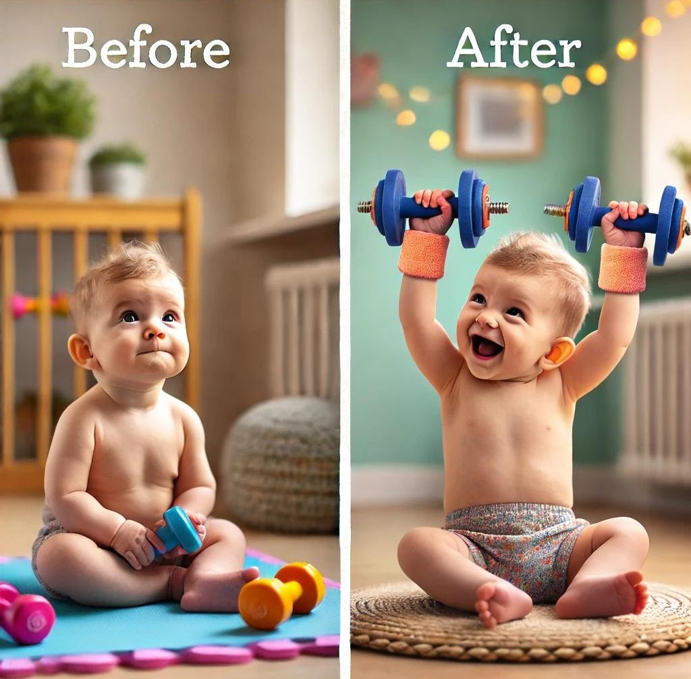

Les vidéos présentes sur cette page sont à but informatif uniquement. Elles ne remplacent pas une consultation avec un professionnel de santé qualifié. Ces exercices doivent être réalisés uniquement avec l'accord et sous la supervision d'un professionnel de santé (ostéopathe, sage-femme, consultante en lactation IBCLC, logopédiste, physiothérapeute, etc.).
Chaque situation est unique, une évaluation personnalisée est indispensable avant de débuter tout exercice.
Les exercices oro-moteurs sont des stimulations buccales réalisées avec les doigts (ou parfois avec des ustensiles adaptés) afin d'améliorer la mobilité de la langue, le tonus musculaire oro-facial et la coordination de la succion.
⬥ En cas de bruxisme du bébé :
Voici une sélection de vidéos présentant différents types d'exercices de stimulation oro-motrice :
Stimulations fondamentales de la langue et des lèvres pour les nourrissons.
Voir la vidéo →Techniques d'étirement doux pour améliorer l'amplitude de mouvement lingual.
Voir la vidéo →Massages doux pour détendre les muscles faciaux et améliorer la mobilité buccale.
Voir la vidéo →Techniques pour améliorer la coordination et l'efficacité de la succion.
Voir la vidéo →Les exercices pré-opératoires visent à préparer les tissus et à familiariser le bébé avec les manipulations buccales. Ils permettent également d'évaluer la réponse du bébé aux stimulations et d'optimiser les résultats post-opératoires.
Les exercices post-opératoires sont essentiels pour éviter la formation d'adhérences cicatricielles et favoriser une bonne mobilité linguale durable. Ils doivent être réalisés selon les instructions précises du praticien ayant effectué l'intervention.

La fréquence des exercices dépend de l'âge du bébé et de la recommandation du professionnel. En règle générale :
Ces indications sont générales. Votre professionnel de santé vous donnera les recommandations adaptées à votre enfant.
Le bon timing est essentiel pour que les exercices soient efficaces et bien vécus par le bébé. Voici quelques conseils :
Les exercices de stimulation oro-motrice présentent de nombreux bénéfices :

Une bonne préparation avant la frénectomie permet d'optimiser les conditions de l'intervention et la récupération post-opératoire.
Objectifs de la préparation :
Qui fait la préparation ?
Idéalement, une équipe pluridisciplinaire intervient : ostéopathe ou physiothérapeute pour les tensions corporelles, consultante en lactation ou sage-femme pour l'allaitement, et le praticien réalisant la frénectomie.
La consultation pluridisciplinaire est une étape clé dans la prise en charge des freins restrictifs. Elle réunit différents spécialistes pour évaluer globalement la situation du bébé et de la famille.
Cette approche collaborative permet de :
Notre équipe de professionnels formés est disponible pour vous accompagner à chaque étape du processus.
Certains bébés présentent une hypersensibilité orale ou un réflexe nauséeux prononcé qui rendent les exercices difficiles à réaliser. Des jouets de stimulation adaptés peuvent aider à désensibiliser progressivement la bouche.
Les jouets mordants en silicone de qualité alimentaire, comme les pieuvres ou anneaux de dentition, permettent au bébé d'explorer lui-même les sensations orales à son rythme et selon son propre seuil de confort.
Cette auto-exploration est souvent mieux tolérée que les stimulations externes et constitue un excellent complément aux exercices guidés par un professionnel.
Voir les jouets recommandés →Nos professionnels formés à la prise en charge des troubles de la succion et des freins restrictifs sont disponibles pour vous accompagner et vous montrer les exercices adaptés à votre situation.
Consulter notre équipe